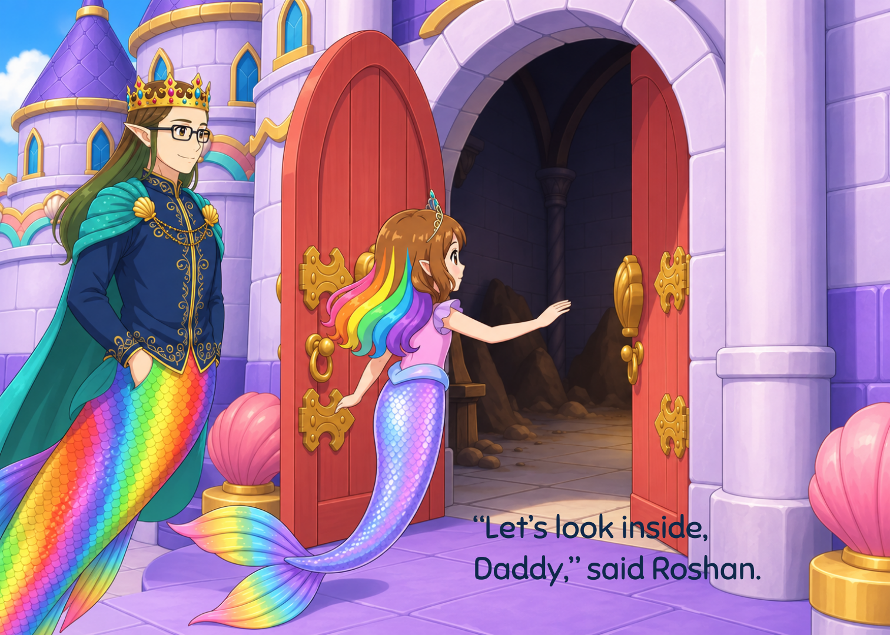
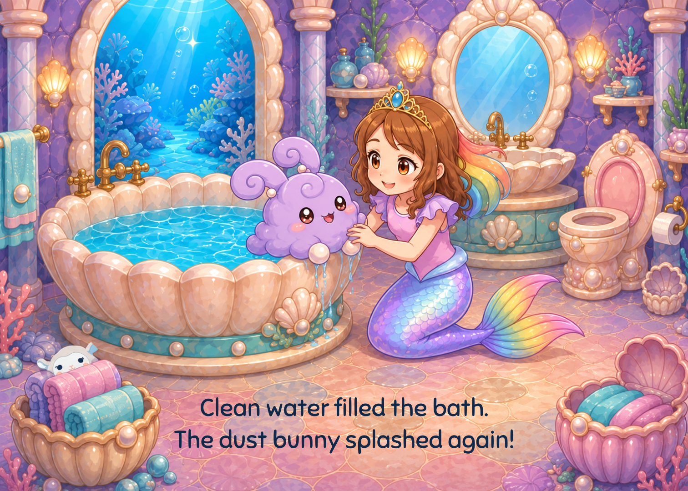
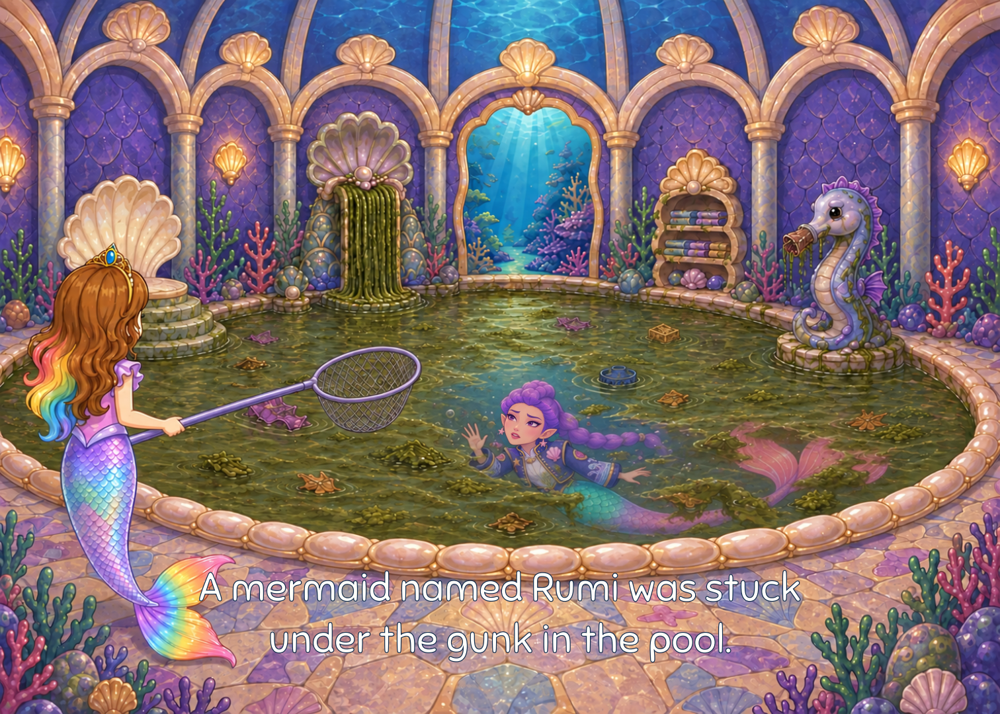
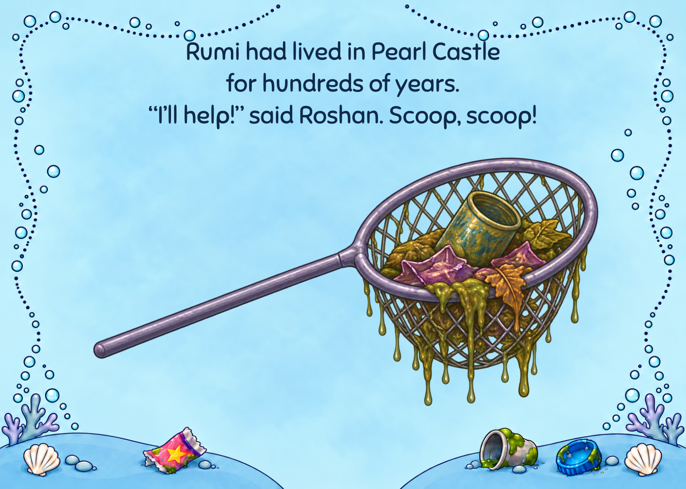
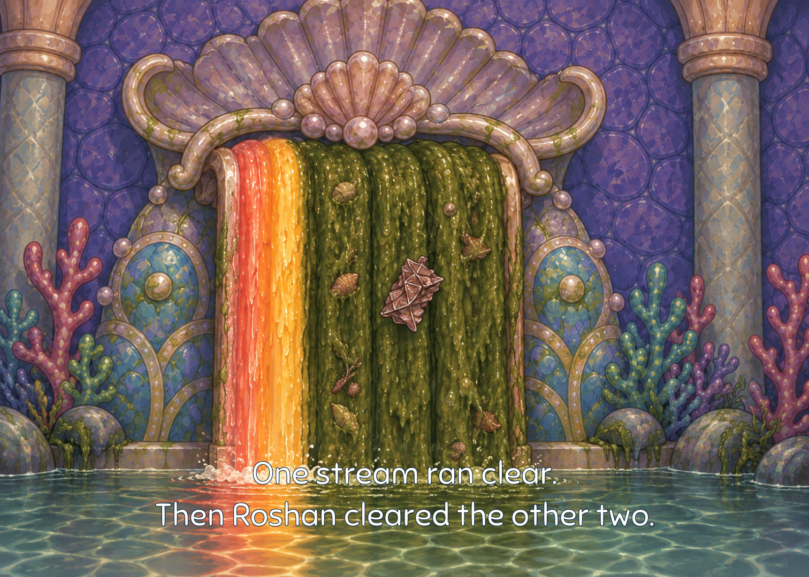
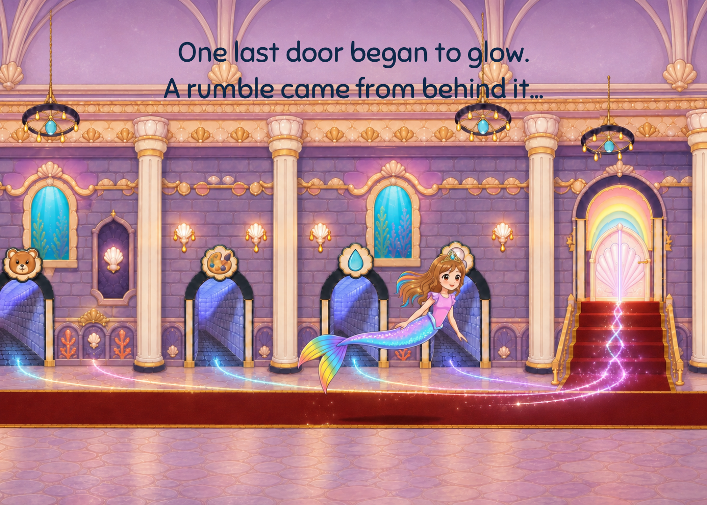
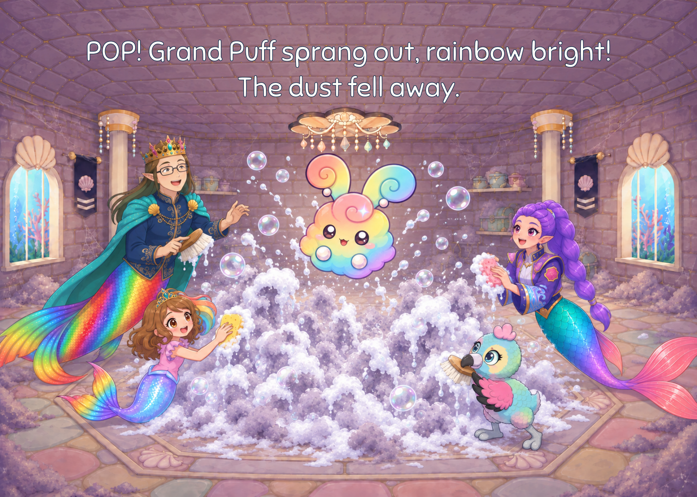
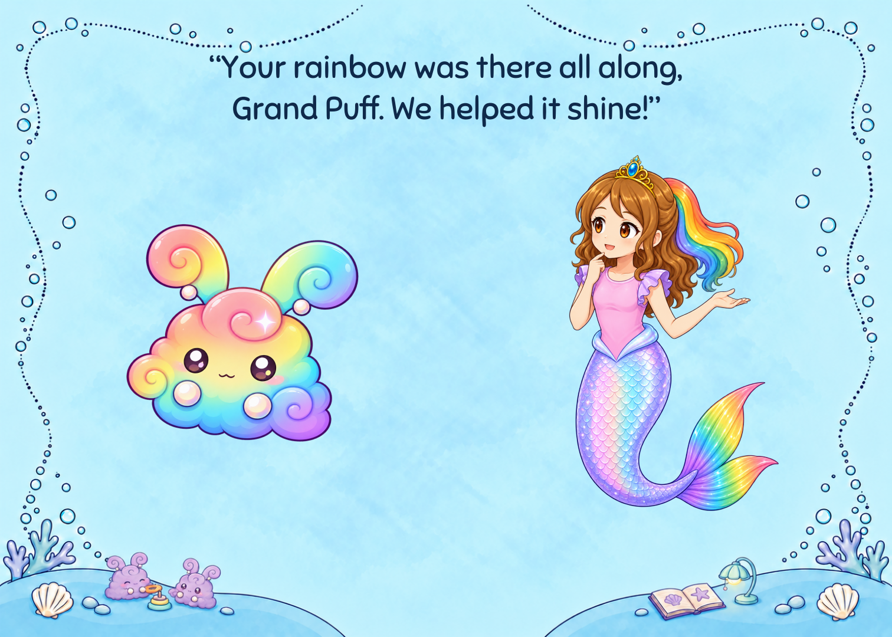
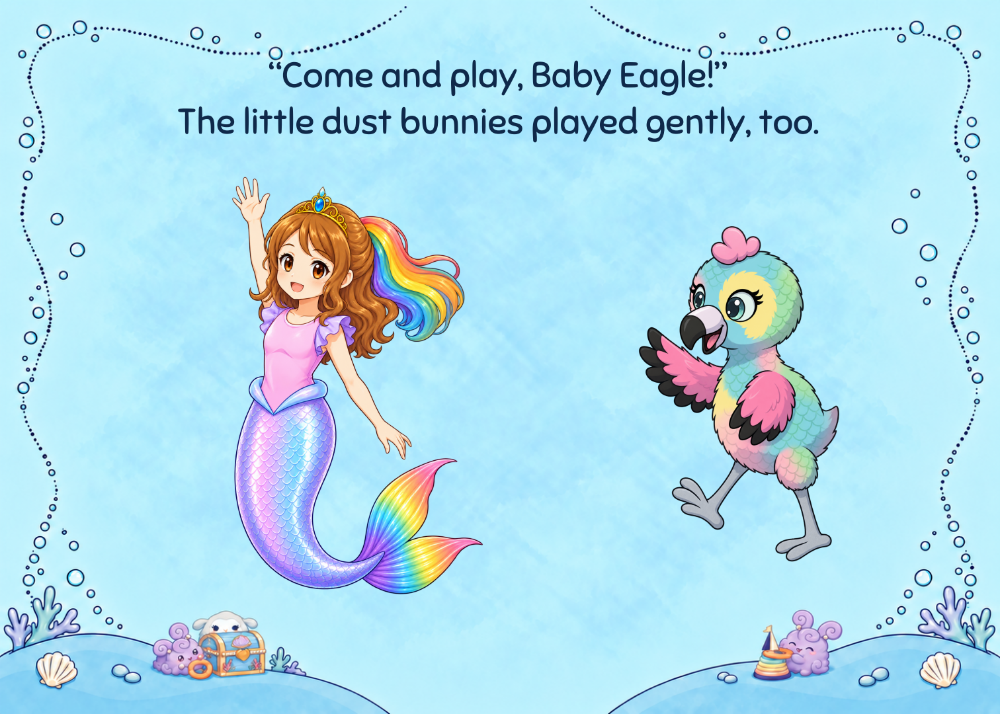
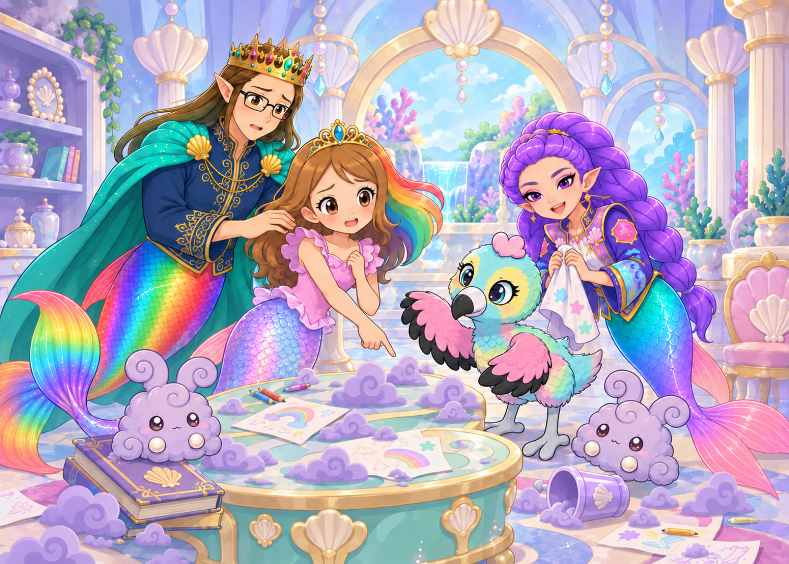

Mermaid Roshan · Landscape bookMermaid Roshan and the Hidden Rainbow
7 × 5 inches · 32 story pages + covers · V30 - local identity and continuity polish
Download PDF · Revision audit and before/after views
34 pages including covers. Owner, child and final print acceptance remain open.
Cover Page 1
Page 1 Page 2
Page 2 Page 3
Page 3
Page 4 Page 5
Page 5 Page 6
Page 6 Page 7
Page 7 Page 8
Page 8 Page 9
Page 9
Page 10
Page 11
Page 12
Page 13 Page 14
Page 14 Page 15
Page 15 Page 16
Page 16 Page 17
Page 17 Page 18
Page 18 Page 19
Page 19 Page 20
Page 20 Page 21
Page 21 Page 22
Page 22 Page 23
Page 23
Page 24 Page 25
Page 25 Page 26
Page 26 Page 27
Page 27 Page 28
Page 28
Page 29 Page 30
Page 30
Page 31
Page 32 Back cover
Back cover